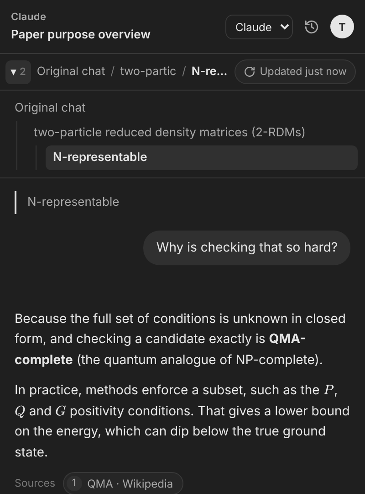

Research
Read papers and sources without losing your place
Summarize a paper in your main chat, then branch off every term, method or claim you need to check.
- Turn on Search to answer with live web results and clickable sources.
- Drop in a screenshot of a figure or table and ask about it.
- Find any past branch again under History, across all your chats.
